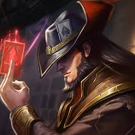

Click on the image of TF to see his various skins!
Twisted Fate wields a magical card deck that contains three types of cards:
Blue Card:
Restores a modest amount of mana and deals the targeted enemy unit damage.
Red Card:
Inflicts a AoE slow around the targeted enemy unit and damages all units tagged.
Gold Card:
Stuns the targeted enemy unit and deals them damage.
Twisted Fate is a mid lane control mage who excels at pick-making, early game jungle/mid skirmishes, split pushing, and exerting map pressure. He
is one of the best mid laners in the current meta. To learn more about Twisted Fate's abilities, please click here.